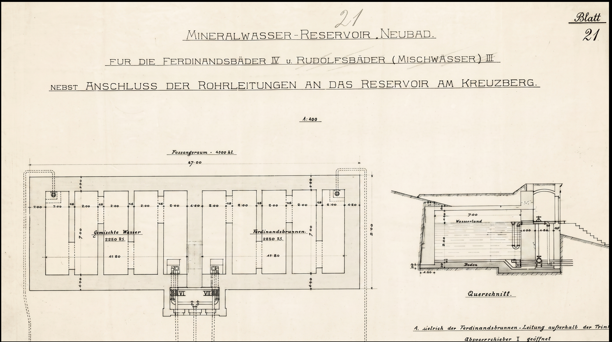
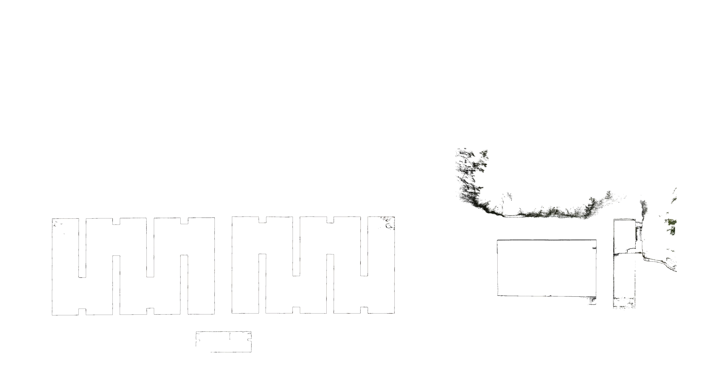

Dokumentace objektu
Historický projekt a současný řez
Plán rezervoáru pro Ferdinandův a Rudolfův pramen porovnaný se současným zaměřením.


Pohybem odhalíte druhý podklad · kliknutím přepnete průhled
Dokumentace objektu
Plán rezervoáru pro Ferdinandův a Rudolfův pramen porovnaný se současným zaměřením.

